Title
First paragraph
Second paragraph
Nested paragraph
<!-- 1996 style: <center> and <font> are obsolete in HTML today -->
<center><font size="7" color="red">Welcome</font></center>
CSS3or
CSS4release: browsers ship features one at a time
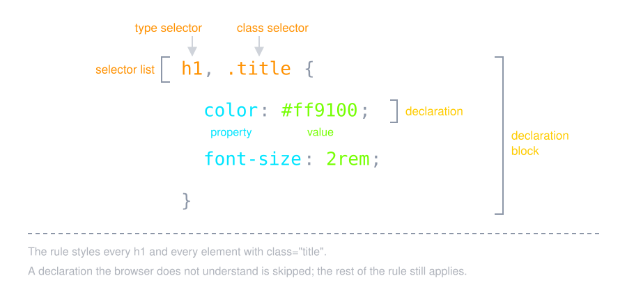
left, bold, none,
auto, …
color: #ff9100; /* hex: rr gg bb */
color: rgb(255 145 0); /* red green blue, 0 to 255 */
color: rgb(255 145 0 / 50%); /* ... and 50% opacity */
color: hsl(34 100% 50%); /* hue, saturation, lightness */
oklch() is the modern choice for palettes:
equal steps in lightness look equal to the eye
px, rem, %,
vw, … (in Responsive Design)
| Text |
color, font-family, font-size,
font-weight, line-height,
text-align
|
| Box |
width, height, margin,
padding, border, border-radius,
background
|
| Layout |
display, position, flex,
grid-template-columns, gap
|
| Motion |
transition, animation,
transform
|
body {
font-family: system-ui, sans-serif; /* the operating system's own font */
line-height: 1.5;
color: #222;
}
<!-- 1. External: one file for the whole site (use this) -->
<link rel="stylesheet" href="style.css" />
<!-- 2. Internal: rules for this page only -->
<style>
h1 { color: #ff9100; }
</style>
<!-- 3. Inline: one element, no selector -->
<h1 style="color: #ff9100">Hello</h1>
type="text/css" is the default: old code writes it, you do
not need to
screen, print or all
<link rel="stylesheet" href="print.css" media="print" />
/* or inside any stylesheet */
@media print {
nav, video, .ads { display: none; }
a[href]::after { content: " (" attr(href) ")"; }
}
* |
every element | [disabled] |
has the attribute |
p |
every <p> |
[type="email"] |
attribute equals |
.note |
every element with class="note" |
a[href^="https:"] |
attribute starts with |
p.note |
a <p> with that class |
a[href$=".pdf"] |
attribute ends with |
.note.warning |
both classes at once | [class*="icon"] |
attribute contains |
#main |
the element with id="main" |
h1, h2 |
selector list: either one |
#section) and JavaScript, because an id is hard to override
(see Cascade)
.note { border-left: 4px solid #00e5ff; padding-left: 8px; }
.note.warning { border-left-color: #ff9100; }
a[href^="https:"] { color: #76ff03; }
a[href$=".pdf"] { color: #ff5252; }
<p class="note">A note</p>
<p class="note warning">A warning: two classes</p>
<a href="https://developer.mozilla.org">MDN</a>
<a href="/syllabus.pdf">Syllabus</a>
/* descendant: any depth */
article p { color: #00e5ff; }
/* child: direct only */
article > p { font-weight: bold; }
/* the next sibling */
h2 + p { color: #ff9100; }
/* every later sibling */
h2 ~ p { font-style: italic; }
<article>
<h2>Title</h2>
<p>First paragraph</p>
<p>Second paragraph</p>
<div><p>Nested paragraph</p></div>
</article>
First paragraph
Second paragraph
Nested paragraph
article p and
h2 + p, which tie in specificity, so the later rule wins:
orange
:hover, :active,
:focus-visible (keyboard focus)
:first-child, :last-child,
:nth-child(odd), :nth-child(3n + 1)
:checked, :disabled,
:required, :user-invalid
tr:nth-child(even) { background: rgb(255 255 255 / 12%); }
input:focus-visible { outline: 3px solid #00e5ff; }
/* only after the user has edited the field */
input:user-invalid { border-color: #ff5252; }
| row 1 |
| row 2 |
| row 3 |
| row 4 |
:is(), :where(), :not()
/* instead of h1 a, h2 a, h3 a */
:is(h1, h2, h3) a { color: inherit; }
/* the same matching, but zero specificity: easy to override */
:where(ul, ol) { padding-left: 1.5rem; }
/* everything except */
button:not(:disabled):hover { background: #ff9100; }
:is() counts as its
most specific argument
:where() always counts as
0: good for defaults in a library
:has(): the Parent Selector
label:has(input:checked) { background: rgb(118 255 3 / 25%); }
.card:has(img) { display: grid; grid-template-columns: 120px 1fr; }
form:has(:user-invalid) button { opacity: 0.5; }
:has(), this needed JavaScript; now it works in every
major browser
::first-letter, ::first-line,
::marker, ::placeholder,
::selection
::before and ::after insert content, and need
content
.required::after { content: " *"; color: #ff5252; }
a[href^="http"]::after { content: " ↗"; }
li::marker { color: #ff9100; }
p::first-letter { font-size: 2em; color: #00e5ff; }
| Type, class, id | p, .note, #main |
| Attribute |
[type="email"], [href^="https:"],
[href$=".pdf"]
|
| Combinators |
descendant (space), child >, siblings +
~, list ,
|
| Pseudo-classes |
:hover, :focus-visible,
:nth-child(), :checked,
:user-invalid
|
| Logic |
:is(), :where(), :not(),
:has()
|
| Pseudo-elements |
::before, ::after, ::marker,
::first-letter, ::selection
|
/* style.css */
p { color: red; }
/* <style> in the page */
p { color: blue; }
!important)
style="" attribute@layer)![Where a declaration comes from, weakest first, as a staircase: browser default, user (the reader's sheet), external sheets 1 to n from link, internal sheets 1 and 2 from style, inline style attribute. Origin is compared before anything else: browser, then user, then author, the page. Among the author's sheets, specificity decides first, then document order, so a style placed before a link loses to it. Inline style beats every selector. !important turns the origins round: a user !important beats the page, and an author !important beats style.](./img/cascading.svg)
Priority 1: the more specific selector wins
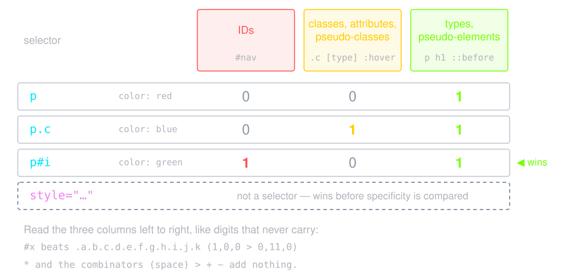
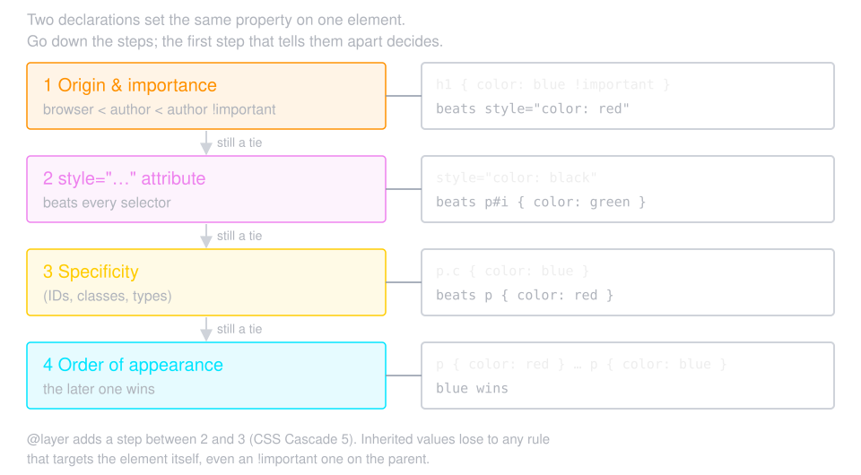
p { color: red; }
p.c { color: blue; }
p#i { color: green; }
<p class="c" id="i">the id wins</p>
<p class="c" style="color: white">style="" wins</p>
<p class="c">the class wins</p>
<p>only the type matches</p>
the id wins
style="" wins
the class wins
only the type matches
!important
<style>
p { color: #00e5ff !important; }
</style>
<p style="color: red">Still cyan</p>
Still cyan
!important beats style="", and only another
!important can beat it
!important: a
rule on the element itself beats it
@layer sets the order of whole groups of
rules, so a later layer wins whatever the
specificity
@layer reset, framework, components; /* the order is set here */
@import url("bootstrap.css") layer(framework);
@layer components {
.link { color: #76ff03; } /* wins */
}
@layer framework {
#nav a { color: #ff5252; } /* an id, but in an earlier layer */
}
!important wars with a framework: put it in a low
layer
color, font-*,
line-height, text-align,
visibility
margin, padding,
border, background, width,
display
inherit, initial,
unset, revert
.parent { color: #00e5ff; border: 2px solid #ff9100; }
child: gets the color, not the border
Each HTML element is a box: content, padding, border and margin
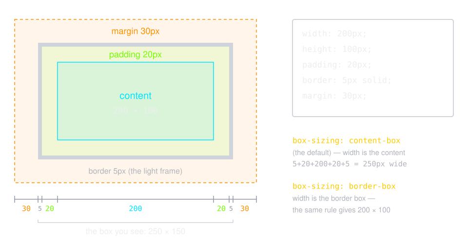
box-sizing: border-boxwidth is the content only: padding and border are
added on top
border-box, width is the
visible box: a 200px box stays 200px
/* the first lines of almost every modern stylesheet */
*, *::before, *::after {
box-sizing: border-box;
}
margin: 10px; /* all four sides */
margin: 10px 20px; /* top and bottom, left and right */
margin: 10px 20px 30px 40px; /* top right bottom left: clockwise */
margin-inline: auto; /* center a block that has a width */
padding-block: 1rem; /* top and bottom */
border-inline-start: 4px solid #ff9100;
When a bottom margin meets a top margin, only the larger one shows. Left and right margins never collapse.
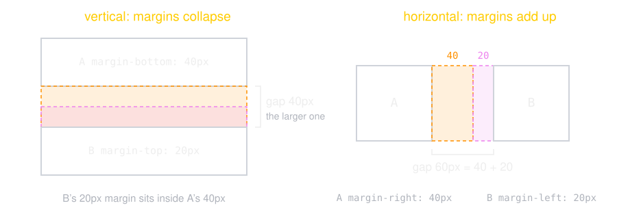
.card {
background: linear-gradient(135deg, #ff9100, #ee82ee);
border-radius: 12px;
box-shadow: 0 4px 12px rgb(0 0 0 / 40%);
}
.hero {
/* image, position / size, repeat */
background: url("linux.jpg") center / cover no-repeat;
}
div,
p, h1, section, ul):
starts a new line, fills the width, takes width and
height
span,
a, strong, code): flows inside a
line of text, ignores width and height
.w { width: 300px; border: 2px solid #ff9100; }
Text with a span.w keeps flowing in the line.
display changes the kind of box (next section)overflow: visible (default)
| hidden | auto | scroll
auto shows a scrollbar only when it is needed
.title {
white-space: nowrap;
overflow: hidden;
text-overflow: ellipsis; /* cut long text with … */
}
display Propertyblock, inline:
the two kinds of box in normal flow
inline-block: sits in a line, but takes
width and height (the pre-flexbox trick for rows
of boxes)
flex, grid:
the element lays out its children
none: the element is not rendered at all
position property
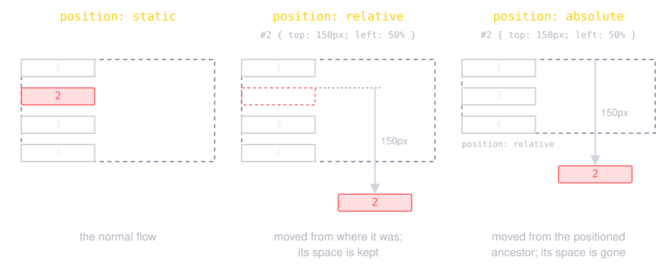
| Property | Value | Description |
|---|---|---|
| position | static | default position = Normal |
| relative | offset from its normal static position | |
| absolute | a fixed position within its containing element | |
| fixed | a fixed position within the browser window | |
| sticky | this is basically a hybrid between relative and fixed position. | |
| top, bottom, left, right | positions of box's corners | |
top: +20pxtop: -20pxbottom: -20pxbottom: +20pxThe paragraph 1
The paragraph 2
The paragraph 3
The paragraph 4
p.demo.five {
border-style: solid;
border-width: 2px;
border-color: black;
width: 300px;
}
#m {
position: relative;
left: 50%;
top: 150px;
border-color: red;
}
<html> element
top,
left,
right,
bottom properties
<a href="https://1995parham-teaching.github.io/ie-lecture/" target="_blank">
<img style="position: absolute; top: 0; right: 0; border: 0;" src="/img/forkme_right_orange.png" alt="Fork me on GitHub">
</a>
The paragraph 1
The paragraph 2
The paragraph 3
The paragraph 4
top,
left, right,
bottom properties
.sticky-element {
position: sticky;
top: 0px;
background-color: orange;
}
z-index specifies the stack order of an elementz-index, opacity below 1 or a
transform keeps its children together
img {
position: absolute;
left: 0px;
top: 0px;
z-index: -1;
}
h1 {
color: red;
}
display: flow-root grows to
contain its floats (it used to take a clearfixhack)
img { float: left; width: 120px; margin-inline-end: 16px; }
.article { display: flow-root; }
A block-level element with
clear: left | right | both starts below the
earlier floats on that side instead of wrapping around them.
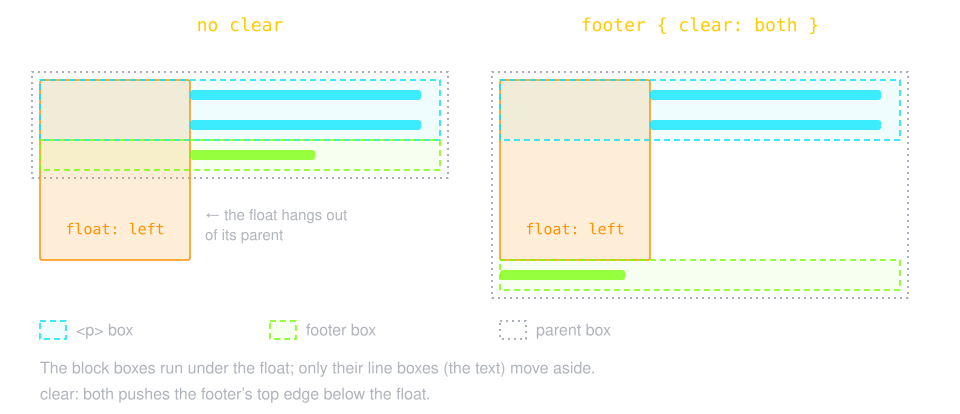
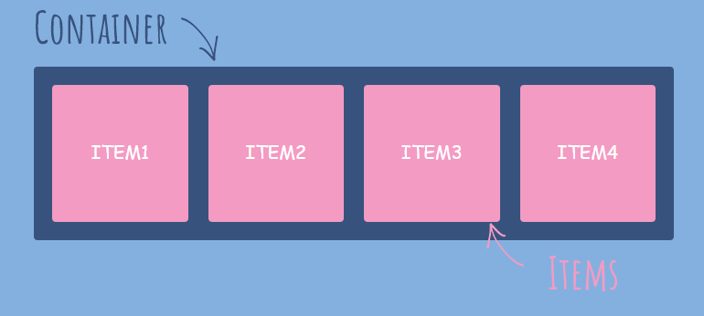
We can create a flex container using display: flex
Now we have flex container and flex items
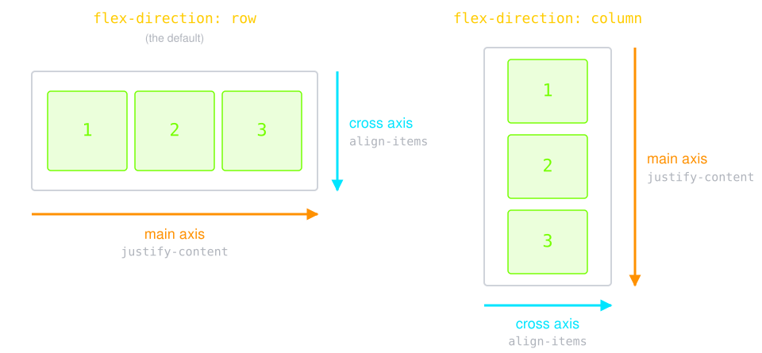
.flex-container {
flex-direction: row | column | row-reverse | column-reverse;
/* Default flex-direction: row */
}
We can align flex items in the direction of main axis using justify-content property
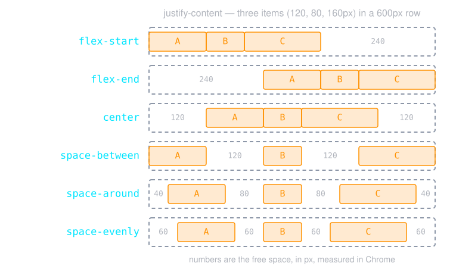
We can align flex items in the direction of cross axis using align-items property
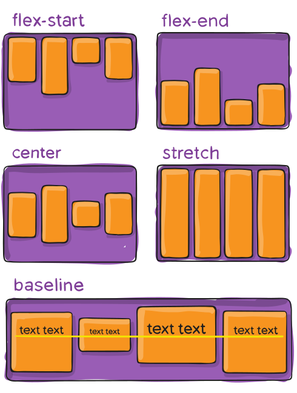
.container {
display: flex;
flex-direction: row;
justify-content: space-between;
}
.container {
display: flex;
flex-direction: row-reverse;
justify-content: space-around;
}
.container {
display: flex;
flex-direction: column;
align-items: center;
}
Controls the wrapping of the container
Items will be wrapped if there is not enough space
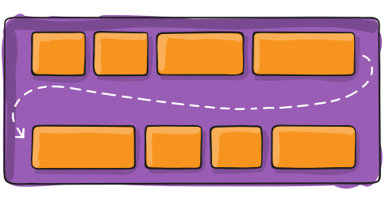
.flex-container {
flex-wrap: nowrap | wrap | wrap-reverse;
/* nowrap is the default — note there is no hyphen */
}
.container {
display: flex;
flex-direction: row;
justify-content: space-between;
flex-wrap: wrap;
}
You can set a gap between rows and columns
row-gap: set gap between rows
column-gap: set gap between columns
gap: a shorthand for row-gap column-gap
.flex-container{
gap: 10px 20px;
/* row-gap: 10px; */
/* column-gap: 20px; */
}
.container {
gap: 20px;
}
Why don't we just use margin?
Gap is a useful property in responsive design
We will see the difference in the media query section
In a flex container, try to use flex-basis instead of width property. Because flex-basis specifies width or height depending on the value of flex-direction.
.container {
display: flex;
flex-direction: row;
justify-content: space-between;
}
.blue {
flex-basis: 300px;
}
.container {
display: flex;
flex-direction: column;
align-items: center;
}
.blue {
flex-basis: 300px;
}
.container {
display: flex;
flex-direction: row;
justify-content: space-between;
}
.blue {
flex-grow: 1;
}
.container {
display: flex;
flex-direction: row;
justify-content: space-between;
}
.blue {
flex-grow: 1;
}
.tomato {
flex-grow: 2;
}
.container {
display: flex;
flex-direction: row;
justify-content: space-between;
}
.blue {
order: 4;
}
Instead of using
.item {
flex-grow: 1;
flex-shrink: 1;
flex-basis: 300px;
}
You can use flex property
.item {
flex: 1 1 300px; /* flex-grow flex-shrink flex-basis */
}
flex: 1 (= 1 1 0%, share the
space equally), flex: auto (= 1 1 auto),
flex: none (= 0 0 auto, keep the size)
Use align-self to override align-items for an individual item
.item {
align-self: auto | flex-start | flex-end | center | stretch
}
.container {
align-items: center;
}
.blue {
align-self: flex-end;
}
.tomato {
align-self: flex-start;
}
.orange {
align-self: stretch;
}
The container declares the tracks, and the children fall into them in order.
.container {
display: grid;
grid-template-columns: 200px 1fr 1fr;
gap: 16px;
}
.container {
display: grid;
grid-template-columns: repeat(3, 1fr);
}
A responsive gallery, with no media query at all:
.gallery {
display: grid;
grid-template-columns: repeat(auto-fit, minmax(200px, 1fr));
gap: 16px;
}
An item can span tracks, by line number or by name.
.hero {
grid-column: 1 / 3; /* from line 1 to line 3, so two columns */
grid-row: 1;
}
Or describe the layout as a picture:
.page {
display: grid;
grid-template-areas:
"header header"
"side main"
"footer footer";
}
.page > nav { grid-area: side; }
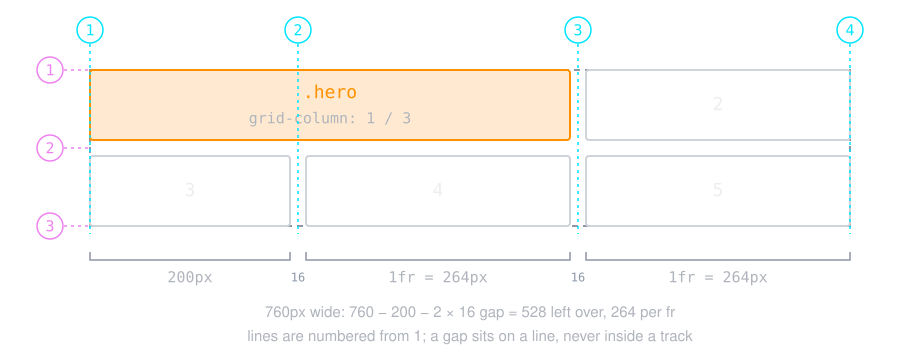
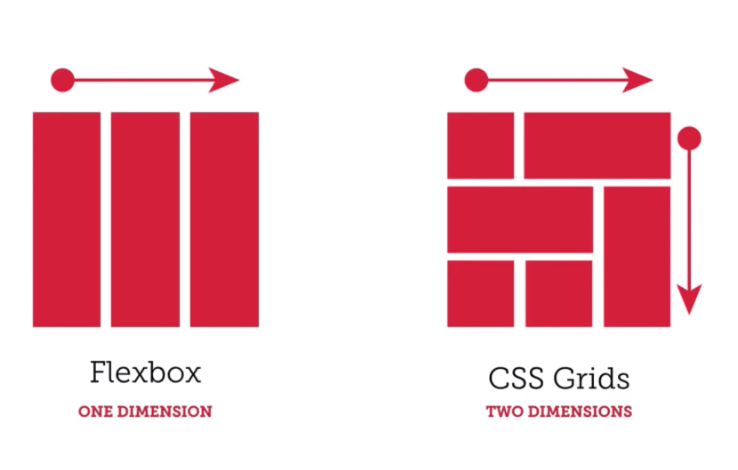
.parent {
display: grid;
place-items: center;
}
/* or, with flexbox */
.parent {
display: flex;
justify-content: center;
align-items: center;
}
Responsive Design is the practice of making sure your content looks good on all screen sizes.
Everything in the website including layouts, fonts and images should automatically adapt to the user's device.
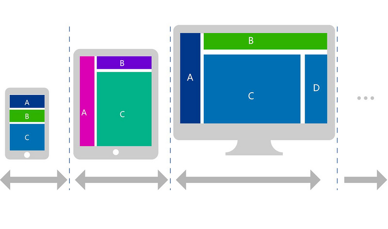
<meta name="viewport" content="width=device-width, initial-scale=1" />
px |
borders, shadows, small fixed sizes |
rem |
font sizes and spacing: the root font size (16px by default), so it follows the user's font setting |
em |
the element's own font size |
% |
a share of the parent (for width) |
vw / vh |
1% of the viewport width / height |
dvh |
like vh, but follows the phone's address bar as it hides
|
ch |
the width of 0: max-width: 65ch keeps lines
readable
|
fr |
a share of the leftover space in a grid |
cm, mm, in, pt
|
physical units, only meaningful on paper (1in = 96px) |
@media (width <= 600px) { ... } /* range syntax */
@media (max-width: 600px) { ... } /* the same, older syntax */
@media (600px < width < 1000px) { ... }
@media (orientation: landscape) { ... }
@media (hover: hover) and (pointer: fine) { ... } /* a mouse */
@media print, (width >= 1200px) { ... } /* comma = or */
all, screen,
print; the others (tv, handheld,
speech, …) are deprecated
.cards {
display: grid;
gap: 1rem; /* one column on a phone */
}
@media (width >= 600px) {
.cards { grid-template-columns: 1fr 1fr; }
}
@media (width >= 1000px) {
.cards { grid-template-columns: repeat(3, 1fr); }
}
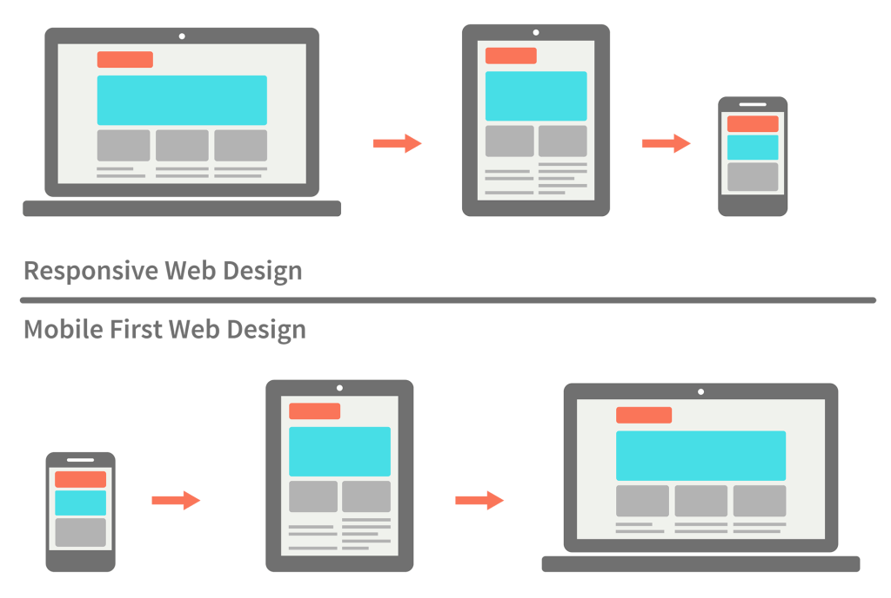
@media (prefers-color-scheme: dark) {
:root { --bg: #121212; --text: #eeeeee; }
}
@media (prefers-reduced-motion: reduce) {
* { animation: none; transition: none; }
}
Try to resize the screen
@media screen and (max-width: 800px){
.box{
width: 250px;
height: 250px;
background-color: #2c3e50;
border-radius: 10px;
border-color:#c0392b ;
}
}
.box {
flex-basis: 33%;
}
@media screen and (max-width: 600px){
.flex-container {
flex-wrap: wrap;
}
.flex-item {
flex-basis: 100%
}
}
You can have multiple media queries
@media screen and (max-width: 800px){
.box {
background-color: #2c3e50;
}
}
@media screen and (max-width: 600px){
.box {
background-color: #16a085;
}
}
.main {
gap: 2%;
}
.box {
flex-basis: 32%;
}
@media screen and (max-width: 600px){
.sidebar {
display: none;
}
.main {
flex-wrap: wrap; /* or set it out of media query */
}
.box {
flex-basis: 100%;
}
}
Try to change the orientation
@media screen and (orientation: landscape){
.box{
width: 250px;
height: 250px;
background-color: #2c3e50;
border-radius: 10px;
border-color:#c0392b ;
}
}
img, video { max-width: 100%; height: auto; } /* never wider than the column */
.thumb {
width: 100%;
aspect-ratio: 16 / 9;
object-fit: cover; /* fill the box, crop the rest */
}
object-fit: fill (default): stretched
object-fit: cover: croppedclamp(min, preferred, max) picks the
preferred value, but never leaves the bounds
h1 {
font-size: clamp(1.5rem, 4vw, 3rem);
}
min() and
max() work the same way
.wrap { container-type: inline-size; }
.card { display: grid; gap: 8px; }
@container (width > 400px) {
.card { grid-template-columns: 160px 1fr; }
}
:root {
--brand: #ff9100;
--gap: 16px;
}
.button {
background: var(--brand);
padding: var(--gap);
}
.dark {
--brand: #ffcc00;
}
element.style.setProperty("--brand", "#00e5ff");
.card {
padding: 1rem;
h2 { margin: 0; } /* .card h2 */
&:hover { outline: 2px solid #ff9100; } /* .card:hover */
.dark & { background: #222; } /* .dark .card */
@media (width >= 600px) {
padding: 2rem;
}
}
& is the parent selector; it is needed
when the nested part is not a separate descendant
:root {
color-scheme: light dark; /* also gives inputs and scrollbars a dark look */
--brand: oklch(72% 0.19 55);
}
body {
background: light-dark(#ffffff, #121212);
color: light-dark(#222222, #eeeeee);
}
.button:hover {
background: color-mix(in oklch, var(--brand), black 20%);
}
light-dark() picks the first value in light
mode, the second in dark mode
color-mix(): a darker or lighter shade
without a second variable
calc(), min(), max(),
clamp()
var(--name, fallback)rgb(), hsl(), oklch(),
color-mix(), light-dark()
url(), linear-gradient(),
radial-gradient()
translate(), rotate(),
scale()
repeat(), minmax()
.sidebar { width: calc(100% - 2 * var(--gap)); }
.button {
background-color: #00e5ff;
transition: background-color 200ms ease, transform 200ms ease;
}
.button:hover {
background-color: #ff9100;
transform: translateY(-4px);
}
@keyframes slide {
to { transform: translateX(260px); background-color: #00e5ff; }
}
@keyframes spin {
to { transform: rotate(360deg); }
}
.slide { animation: slide 2s ease-in-out infinite alternate; }
.spin { animation: spin 3s linear infinite; }
transform and opacity: changing
left or width makes the browser redo the layout
on every frame
display: none |
not rendered, takes no space, not read by screen readers |
hidden attribute |
the same, from HTML |
visibility: hidden |
invisible, keeps its space |
opacity: 0 |
invisible, keeps its space, can still be clicked |
/* hidden on screen, still read by screen readers */
.visually-hidden {
position: absolute;
width: 1px;
height: 1px;
overflow: hidden;
clip-path: inset(50%);
white-space: nowrap;
}
:has(),
@container, nesting, @layer,
light-dark()
subgrid: a child lines its own items up on
the parent's grid tracks
@scope: limit rules to one part of the page
.nav {
display: flex;
align-items: center;
gap: 20px;
padding: 12px 20px;
border-radius: 8px;
background: #1f2937;
}
.nav a {
color: #d1d5db;
text-decoration: none;
}
.nav a:hover,
.nav a[aria-current="page"] {
color: white;
}
.nav .logo {
margin-inline-end: auto;
font-weight: 700;
}
<nav class="nav">
<a class="logo" href="#">AUT Shop</a>
<a href="#" aria-current="page">Home</a>
<a href="#">Products</a>
<a href="#">About</a>
</nav>
Top: the same HTML with no CSS. The auto margin pushes the other links to the end.
.btn {
--c: #2563eb;
font: inherit;
padding: 8px 16px;
border: 2px solid var(--c);
border-radius: 6px;
background: var(--c);
color: white;
cursor: pointer;
}
.btn:hover:not(:disabled) {
filter: brightness(0.85);
}
.btn:focus-visible {
outline: 3px solid #93c5fd;
outline-offset: 2px;
}
.btn.danger { --c: #dc2626; }
.btn.outline {
background: transparent;
color: var(--c);
}
.btn:disabled { opacity: 0.5; }
<button class="btn">Save</button>
<button class="btn outline">Cancel</button>
<button class="btn danger">Delete</button>
<button class="btn" disabled>Sending…</button>
A variant only changes --c. Hover them, and press
Tab to see the focus ring.
.card {
width: 260px;
overflow: hidden;
border-radius: 12px;
background: white;
box-shadow: 0 4px 12px rgb(0 0 0 / 0.15);
}
.card img {
display: block;
width: 100%;
aspect-ratio: 16 / 9;
object-fit: cover;
}
.card .body { padding: 12px 16px; }
.card h3 { margin: 0; font-size: 1.1em; }
.card p { margin: 4px 0 8px; color: #555; }
.tag {
padding: 2px 10px;
border-radius: 999px;
background: #e0f2fe;
color: #0369a1;
font-size: 0.8em;
}
Six weeks, every Sunday.
Beginner
<article class="card">
<img src="./img/linux.jpg" alt="Tux">
<div class="body">
<h3>Intro to Linux</h3>
<p>Six weeks, every Sunday.</p>
<span class="tag">Beginner</span>
</div>
</article>
overflow: hidden clips the image to the rounded corners.
.grid {
display: grid;
grid-template-columns:
repeat(auto-fill, minmax(90px, 1fr));
gap: 12px;
}
.grid > div {
padding: 16px 8px;
border-radius: 8px;
background: #ede9fe;
text-align: center;
}
<div class="grid">
<div>Mouse</div>
<div>Keyboard</div>
<div>Monitor</div>
<div>Webcam</div>
<div>Headset</div>
</div>
No media query: the same rule gives two columns in a narrow box and four in a wide one.
.wrap { container-type: inline-size; }
.page {
display: grid;
grid-template-columns: 1fr;
gap: 4px;
}
.page > * {
padding: 4px 8px;
background: #e5e7eb;
}
@container (width > 360px) {
.page {
grid-template-columns: 110px 1fr;
grid-template-areas:
"header header"
"nav main"
"footer footer";
}
header { grid-area: header; }
nav { grid-area: nav; }
main { grid-area: main; }
footer { grid-area: footer; }
}
<div class="wrap">
<div class="page">
<header>Header</header>
<nav>Nav</nav>
<main>Main</main>
<footer>Footer</footer>
</div>
</div>
grid-template-areas draws the layout as text. Narrow: one
column in source order.
.field { display: grid; gap: 4px; margin-bottom: 12px; }
.field input {
font: inherit;
padding: 6px 10px;
border: 1px solid #9ca3af;
border-radius: 6px;
}
.field input:focus {
outline: none;
border-color: #2563eb;
box-shadow: 0 0 0 3px #bfdbfe;
}
.field .error { display: none; color: #dc2626; }
.field input:invalid:not(:placeholder-shown) {
border-color: #dc2626;
}
.field:has(:invalid:not(:placeholder-shown)) .error {
display: block;
}
<label class="field">
Name
<input placeholder="Your name">
</label>
<label class="field">
Email
<input type="email" value="parham@"
placeholder="you@aut.ac.ir">
<span class="error">Enter a valid email</span>
</label>
:not(:placeholder-shown) keeps an empty field from showing
the error. Fix the email and the error goes away.
label { display: flex; gap: 8px; margin: 4px 0; }
.switch {
appearance: none;
position: relative;
width: 44px;
height: 24px;
border-radius: 999px;
background: #d1d5db;
transition: background 200ms;
}
.switch::before {
content: "";
position: absolute;
inset: 3px auto 3px 3px;
width: 18px;
border-radius: 50%;
background: white;
transition: translate 200ms;
}
.switch:checked { background: #16a34a; }
.switch:checked::before { translate: 20px; }
<label>
<input type="checkbox" class="switch"> Wi-Fi
</label>
<label>
<input type="checkbox" class="switch" checked> Dark
</label>
A real checkbox, so it still works with the keyboard and in a form. Click them.
.alert {
--tone: #2563eb;
margin-bottom: 8px;
padding: 10px 14px;
border-inline-start: 4px solid var(--tone);
border-radius: 4px;
background: color-mix(in srgb, var(--tone) 12%, white);
}
.alert strong { color: var(--tone); }
.alert.success { --tone: #16a34a; }
.alert.warning { --tone: #d97706; }
.alert.error { --tone: #dc2626; }
<div class="alert"><strong>Note:</strong> Class starts at 7:45.</div>
<div class="alert warning"><strong>Warning:</strong> The deadline is tomorrow.</div>
<div class="alert error"><strong>Error:</strong> The upload failed.</div>
<div class="alert success"><strong>Saved:</strong> Your grade was recorded.</div>
One custom property per variant; color-mix() derives the
light background from it.
table {
width: 100%;
border-collapse: collapse;
}
th, td {
padding: 6px 12px;
text-align: start;
}
thead th {
background: #1f2937;
color: white;
}
tbody tr:nth-child(even) { background: #e5e7eb; }
tbody tr:hover { background: #fef3c7; }
.num {
text-align: end;
font-variant-numeric: tabular-nums;
}
| Student | Grade |
|---|---|
| Sara | 19.25 |
| Reza | 8.5 |
| Mina | 17 |
| Ali | 11.75 |
<table>
<thead><tr><th>Student</th><th class="num">Grade</th></tr></thead>
<tbody>
<tr><td>Sara</td><td class="num">19.25</td></tr>
<tr><td>Reza</td><td class="num">8.5</td></tr>
<tr><td>Mina</td><td class="num">17</td></tr>
<tr><td>Ali</td><td class="num">11.75</td></tr>
</tbody>
</table>
Numbers align at the end and every digit has the same width. Hover a row.
.chat {
display: flex;
flex-direction: column;
gap: 6px;
}
.msg {
align-self: flex-start;
max-width: 70%;
margin: 0;
padding: 8px 12px;
border-radius: 16px 16px 16px 4px;
background: #e5e7eb;
}
.msg.me {
align-self: flex-end;
border-radius: 16px 16px 4px 16px;
background: #2563eb;
color: white;
}
Are the CSS slides online?
Yes, on the course site.
The examples are live.
Thanks!
<div class="chat">
<p class="msg">Are the CSS slides online?</p>
<p class="msg me">Yes, on the course site.</p>
<p class="msg me">The examples are live.</p>
<p class="msg">Thanks!</p>
</div>
align-self moves one item to the other side of the column.
.crumbs {
display: flex;
flex-wrap: wrap;
gap: 8px;
margin: 0;
padding: 0;
list-style: none;
}
.crumbs li + li::before {
content: "›";
margin-inline-end: 8px;
color: #9ca3af;
}
.crumbs a { color: #2563eb; }
<nav aria-label="Breadcrumb">
<ol class="crumbs">
<li><a href="#">Home</a></li>
<li><a href="#">Courses</a></li>
<li><a href="#">IE</a></li>
<li aria-current="page">Lecture 4</li>
</ol>
</nav>
The separators are not in the HTML: li + li::before adds one
before every item except the first.
.icon {
position: relative;
display: inline-block;
font-size: 32px;
}
.badge {
position: absolute;
top: -4px;
inset-inline-end: -10px;
min-width: 20px;
padding: 0 6px;
border-radius: 999px;
background: #dc2626;
color: white;
font-size: 13px;
line-height: 20px;
text-align: center;
}
<span class="icon">🔔
<span class="badge">3</span>
</span>
<span class="icon">📧
<span class="badge">12</span>
</span>
The badge is absolute inside a relative parent, so it moves with the icon.
flex and grid badges draw the tracks over the
page
-webkit-, -moz-): needed for
new features in the past; Autoprefixer adds the few still required
color-scheme and light-dark()
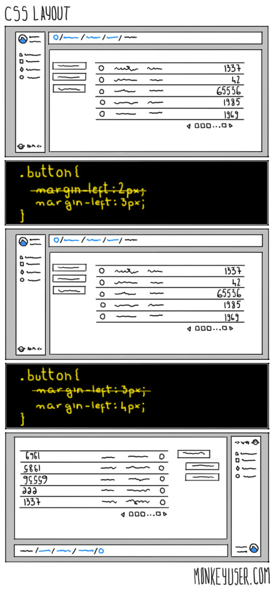